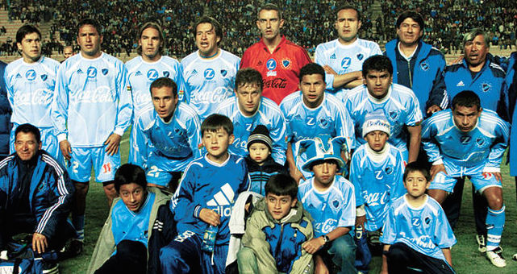

|
|
CLUB BOLIVAR12 DE ABRIL DE 1925 |
|
|
CLUB BOLIVAR12 DE ABRIL DE 1925 |
Bolívar es el primer equipo boliviano en hacer una gira internacional. En diciembre de 1930 y enero de 1931, el Club Bolívar jugó cinco partidos en Chile, convirtiéndose en el primer equipo boliviano en salir a jugar fuera de Bolivia. Bolívar es el equipo boliviano mejor ubicado en la Tabla histórica de la Copa Libertadores de América apareciendo en la novena posición. Bolívar es el único club boliviano en juego que llegó a una final internacional. Bolívar es el único equipo boliviano en ser semifinalistas de la Copa Libertadores de América en su formato actual (eliminatorias desde octavos de final). Además, es el equipo boliviano con más participaciones en torneos internacionales, con 28 Copas Libertadores, 6 Copas Sudamericanas y una Copa Conmebol. Bolívar es el 5.º equipo de América con más participaciones en octavos de final de la Copa Libertadores de América con un total de 11 participaciones. También se ubica en el puesto 17 (de 25) en las 12 ediciones desde 2002 hasta 2013 de la Copa Sudamericana. En la Copa Libertadores 1991, Bolívar derrotó como local a los equipos argentinos de Boca Juniors y River Plate, teniendo como figura al paraguayo Miguel Ángel Sanabria, quien jugó ese año en el club boliviano. Actualmente el Bolívar se ubica en el puesto número 21 en el Ranking Oficial de Clubes de la CONMEBOL, seguido por clubes grandes de América como a Colo-Colo, Racing Club, Club Atlético River Plate, Club Atlético San Lorenzo de Almagro y Botafogo de Futebol e Regatas.
En la semifinal le tocó América de Cali y Olimpia del Paraguay. Debutó perdiendo en Asunción por 3 a 1. En La Paz derrotó con claridad a América por 2 a 0. El partido que rompió las opciones celestes se jugó en Cali. Bolívar comenzó ganando con un golazo del gran puntero izquierdo de la selección peruana Jorge “Coqui” Hirano nada más comenzar el segundo tiempo. Los celestes, con los dientes apretados, mantuvieron el triunfo hasta los 30 minutos en que los locales lograron empatar. A los 39, Ricardo Gareca logró el triunfo para el América. El último partido en La Paz le daba todavía opciones a la Academia, pero Olimpia abrió la cuenta y Abdeneve empató a los 27 de la segunda fracción. El tiempo no alcanzó. América logró 5 puntos, Olimpia 4 y Bolívar 3. En la tabla total de ese torneo, con sus 12 puntos, Bolívar quedó detrás de River y América logrado ocupar el tercer lugar
 En la final, jugó contra Boca Juniors de la Argentina. El club boliviano jugó el partido de ida en el Estadio Hernando Siles, derrotando al club argentino por la mínima diferencia, gracias al gol de Horacio Chiorazzo en el minuto 75. En el partido de vuelta, disputado en Buenos Aires en La Bombonera, el equipo boliviano dirigido por el internacional boliviano Vladimir Soria, perdió 2-0 debido a los goles de Martín Palermo y Carlos Tévez, en los minutos 14 y 28 respectivamente y así el club boliviano, resultó subcampeón del certamen continental. El club Bolívar acabó el año 2004 en el puesto 32 del ranking mundial de clubes por encima de varios clubes de gran tradición, como el Bayern de Múnich (39), Cruzeiro de Belho Horizonte (44), América de México (52) y Cerro Porteño (68), entre otros clubes.
Bolívar llegó por segunda vez en su historia a semifinales de Copa Libertadores, esta vez en la edición de 2014. Durante esta instancia, la Academia venció a León, Emelec y Flamengo en fase de grupos. Luego derrotó en octavos de final nuevamente a León; mientras que en cuartos de final venció a Lanús de Argentina (tras haber empatado 1-1 en Buenos Aires y ganado 1-0 en La Paz). Sin embargo, en semifinales cayó ante San de Lorenzo de Almagro (con una derrota 5-0 en Buenos Aires, y una victoria 1-0 en La Paz), quedando eliminado del certamen.
Bolívar realizó una buena representación internacional ya que actualmente se ubica en el puesto número 8 (de 196 clubes) en el ranking de la Copa Libertadores desde su creación en 1960 hasta el final de la edición Copa Libertadores 2013.